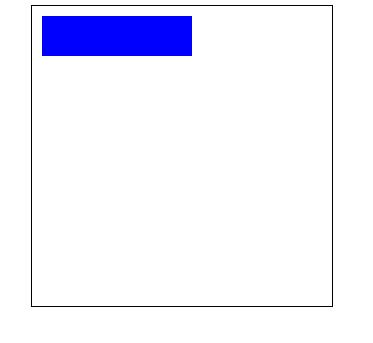

概述
canvas元素负责在页面中设定一个区域，然后就可以通过JavaScript动态地在这个区域中绘制图形。
与浏览器环境中的其他组件类似，
基本用法
1 |
|
可以获取到canvasdom,再通过getContext(‘2d’)获取到2D上下文，通过fillStylefillStyle设置填充颜色，通过strokeStyle设置描边颜色（默认显示 #000），fillRect(0, 0, 150, 150)
设置矩形的位置和长宽
效果如下所示：

栅格
在我们开始画图之前，我们需要了解一下画布栅格（canvas grid）以及坐标空间。栅格的起点为左上角（坐标为（0,0））。所有元素的位置都相对于原点定位。所以图中蓝色方形左上角的坐标为距离左边（X轴）x像素，距离上边（Y轴）y像素（坐标为（x,y））。在课程的最后我们会平移原点到不同的坐标上，旋转网格以及缩放。现在我们还是使用原来的设置。

fillStyle strokeStyle
fillStyle、strokeStyle这个两个属性的值可以是字符串、渐变对象或者模式对象，而且他们的默认值都是”#000000”。字符串值可以为颜色值、十六进制码、rgb、rgba、hsl或hsla.
绘制矩形
不同于SVG，HTML中的元素canvas只支持一种原生的图形绘制：矩形。所有其他的图形的绘制都至少需要生成一条路径。不过，我们拥有众多路径生成的方法让复杂图形的绘制成为了可能。
fillRect
fillRect(x, y, width, height)
参数
x
矩形起始点的 x 轴坐标。
y
矩形起始点的 y 轴坐标。
width
矩形的宽度。
height
矩形的高度。
绘制一个
1
<canvas id="canvas"></canvas>
1 | var canvas = document.getElementById("canvas"); |
strokeRect
参数
x
矩形起始点的 x 轴坐标。
y
矩形起始点的 y 轴坐标。
width
矩形的宽度。
height
矩形的高度。
1
<canvas id="canvas"></canvas>
1 | var canvas = document.getElementById("canvas"); |
clearRect
参数
x
矩形起始点的 x 轴坐标。
y
矩形起始点的 y 轴坐标。
width
矩形的宽度。
height
矩形的高度。
这仅是一段简单地使用 clearRect 方法的代码片段。

1
<canvas id="canvas"></canvas>
1 | var canvas = document.getElementById("canvas"); |